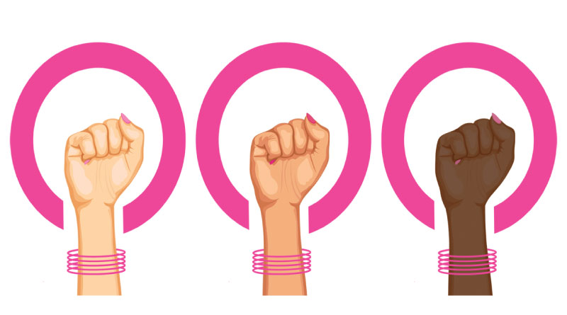

Abstract
Domestic violence, a prevalent problem in India, saw an increase during the lockdown imposed to contain the spread of COVID-19. This article explores the factors associated with an increase in domestic violence incidents during COVID-19 by applying routine activity theory (RAT) framework. Data were drawn from the incidents of domestic violence reported in newspapers. Data was analyzed using content analysis and three major themes, i.e., three principle components of RAT—motivated offender, suitable target, and absence of capable guardian—were drawn. Findings reveal that sources of motivation in domestic violence perpetrators during the lockdown were alcohol and unemployment. The symbolic value that perpetrators associated with women, lower inertia, visibility, and accessibility to the perpetrators made women suitable targets of domestic violence. Lastly, shortage of police force and travel restrictions on formal and informal sources resulted in the absence of capable guardians. We conclude that changes in the routine activities of people during the COVID-19 lockdown provided more opportunities to the perpetrators of domestic violence.
Introduction
Protection of Women from Domestic Violence Act, 2005 defines domestic violenceFootnote1 as physical, sexual, verbal, emotional, and financial abuse against a woman by her partner or family members residing in a joint family (Kalokhe et al. 2016) and also includes unlawful dowry demands (Ram et al. 2019). Domestic violence is a public health concern and has adverse effects on the physical and mental health of women (Abramsky et al. 2011). India shares a significant global burden of domestic violence.
Data from the National Family Health Survey 2015-16 shows that 31.1% of the ever-married Indian women aged between 15 and 49 years experienced spousal violence and almost 4% experienced violence during any pregnancy (International Institute for Population Sciences (IIPS) and ICF 2017).
According to the National Crime Records Bureau’s (NCRB) latest data, domestic violence against women topped the list of categories of violence against women in India. Almost 90,000 cases related to crimes against women were registered in 2018. Out of these, almost one-third were related to cruelty by husband or his relatives (Outlook 2020).
Studies related to domestic violence in India are well documented. It is also acknowledged that domestic violence is associated with education, employment status, caste, and religion of women (Garg et al. 2019), sex of firstborn child (Weitzman 2019), alcohol consumption by husband (Ram et al. 2019), dowry (Pallikadavath and Bradley 2019), asthma, genital sores or ulcers, genital discharge, and sexually transmitted diseases (STIs) (Pengpid and Peltzer 2018), abortion (Stephenson et al. 2016), justification for wife beating (Begum et al. 2015), multiple sex partners of husband (Sinha et al. 2012), and controlling behavior by husband (Dalal and Lindqvist 2012).
Domestic Violence During COVID-19
There is a preliminary evidence to conclude that domestic violence during the COVID-19 increased globally. The restrictions imposed to curb the spread of virus resulted in an increase in violence. For instance, the frontline practitioners dedicated to support victims of domestic violence in Australia reported an increase in the frequency and severity of violence against women during COVID-19 (Fitz-Gibbon et al. 2020). There was an increase in new violence incidents as well. Around 42% of the Australian practitioners noted an increase in first-time family violence reporting by women (Fitz-Gibbon et al. 2020). Mahase (2020) reported a 60% increase in emergency calls related to violence against women by their intimate partners in Europe. Similarly, Agüero (2020) found a 48% increase in helpline calls related to domestic violence in Peru. While analyzing tweets related to domestic violence, Xue et al. (2020) highlighted that tweets mentioning an increase in domestic violence due to COVID-19 were frequent (Xue et al. 2020).
Regarding domestic violence during the COVID-19, only a few empirical published studies are available. For instance, a study on Ethiopian women found that almost one in four women experienced any form of domestic violence during the COVID-19 pandemic. Housewives aged less than 30 years, and with arrange marriage were at greater odds of experiencing domestic violence (Gebrewahd et al. 2020). Piquero et al. (2020) examined the association between stay-at-home order in Dallas and domestic violence during COVID-19. Using data from Dallas Police Department, they found an increase in domestic violence in the first two weeks after the lockdown was imposed and a decrease later (Piquero et al. 2020). Sediri et al. (2020) reported that violence against Tunisian women increased during the lockdown. Further, it was positively associated with depression, anxiety, and stress (Sediri et al. 2020). These studies can only be considered the first step towards a more profound understanding of domestic violence during COVID-19.
Domestic Violence in India during COVID-19
On 22nd March 2020, the Prime Minister of India announced a nationwide lockdown for one day. This lockdown was subsequently extended for a week, then for 21 days and finally until 3rd May 2020 to contain the spread of COVID-19. India declared COVID-19 a “notified disaster” under the Disaster Management Act, 2005 (Sharma et al. 2020). Extended lockdown and other social distancing measures imposed to curb the pandemic made women more vulnerable to domestic violence. Women were fighting a shadow pandemic inside their homes (UN Women 2020).
National Commission for Women’s (NCW) data showed that domestic violence complaints doubled after the nationwide lockdown was imposed in India (Vora et al. 2020). Tamil Nadu Police reported an increase in domestic violence complaints. They received approximately 25 calls every day during the lockdown period and registered at least 40 such cases (Kannan 2020). Similarly, Bangalore Police reported a spike in complaints from 10 calls to 25 calls every day from the victims of domestic violence (Peter 2020). These data from different sources indicate that domestic violence incidents increased across the country during the lockdown. On the contrary, organizations such as Jagori, Shakti Shalini, and AKS Foundation reported a decrease in complaint calls related to domestic violence (Ghoshal 2020). The decrease could be attributed to confinement at home, constant monitoring (Piquero et al. 2020) and controlling decision-making by the abuser, social isolation of victims from friends and family members (Kaukinen 2020), and reduced options for support (Usher et al. 2020).
A Routine Activity Approach
Cohen and Felson (1979) propounded RAT while analyzing the change in crime rates in the USA from 1947 to 1974. Instead of emphasizing on idiosyncrasies of offenders like their contemporaries, they focused on factors that facilitate criminal acts (Cohen and Felson 1979). Since then, various studies adopted RAT to explain different types of criminal acts: for example, property crimes (Massey et al. 1989); domestic and intimate partner violence (Mannon 1997); women’s stalking victimization; automotive thefts (Rice and Csmith 2002); and cybercrimes (Nguyen 2020).
Cohen and Felson (1979) elucidated three factors that occur together in space and time to give rise to criminal acts: (1) motivated offenders, (2) suitable targets, and (3) absence of capable guardians (Cohen and Felson 1979). A motivated offender is one who is both inclined and able to commit a crime (Felson and Cohen 1980). A suitable target is a person/object which can be threatened by the potential offender (Miro 2014). Lastly, a capable guardian is a person or a thing that can prevent or deter the potential criminal from acting on its evil intentions (Felson and Cohen 1980). According to the theorists, the daily activities of our lives are influenced by the convergence of these three elements in time and space. These daily activities were called routine activities. Felson and Cohen argued that criminal and non-criminal activities are interdependent and that our routine activities, even if legitimate, provide opportunities to commit crime (Felson and Cohen 1980).
In the case of domestic violence, mostly men are seen as perpetrators. Though men also experience domestic violence (Malik and Nadda 2019) but in societies where patriarchy prevails, domestic violence is usually associated with women as victims (Dutt 2018). Felson (1987) identified that offenders often want to put the least amount of effort to carry out the criminal activities such as traveling significantly less distance to find a target and choosing a target who is evident and proximate (Felson 1987). This explains the rise in domestic violence cases during COVID-19, as home became the very space where the three elements that Cohen and Felson identified converged. A motivated offender now has to put in the least amount of effort to find its target.
In its original form, the RAT assumed motivation to be given and placed much attention on the other two factors. Over the years, many researchers tried to interpret RAT from different lens. One of the most popular approaches in understanding violence against women is the feminist interpretation of RAT (Schwartz and Pitts 1995; Mustaine and Tewksbury 2002; Mustaine and Tewksbury 1999; Schwartz et al. 2001; Franklin et al. 2012). The feminist interpretation of RAT stresses the importance of examining societal conditions that facilitates violence against women. This can result in better understanding of the element of motivated offender (Schwartz and Pitts 1995). Borrowing the idea from the feminist interpretation of RAT, we found aspects from the reported and reviewed incidents which can help us understand the factors responsible for fueling persons’ motivation to perpetrate violence against their partners during the pandemic. These aspects are discussed in the paper later.
The application of RAT to understand domestic violence is not limited to the lockdown period. Previous studies documented that one of the unique aspects about applying RAT to understand domestic violence is that the theory focuses on the situational factors related to crime victimization (Mannon 1997; Miethe et al. 1987; Hayes 2018). For example, Hayes (2018) found that the presence of a victim’s friends/family contributed to a 60% decrease in re-victimization (Hayes 2018). The study mentioned that examining one of the factors identified by RAT, i.e., the absence of a capable guardian, contributed to a better understanding of domestic violence. Likewise, studying all the three factors identified by the theory could contribute to an in-depth understanding of the situational factors that facilitate domestic violence. This understanding can be helpful in formulating better prevention strategies.


Georgia Reader Reply
Et rerum totam nisi. Molestiae vel quam dolorum vel voluptatem et et. Est ad aut sapiente quis molestiae est qui cum soluta. Vero aut rerum vel. Rerum quos laboriosam placeat ex qui. Sint qui facilis et.